🇬🇧 English walkthrough
Example of Integration with AI
Practical walkthrough in English: explore the interface, offline-first philosophy, live PDF preview, and seamless AI assistance for drafting and academic styling.
Free · Open source · Windows, macOS & Linux · English/Español
Start your thesis, dissertation, or paper from an academic template and write while the PDF updates on its own, with nothing to click. The Typst compiler ships inside the app itself: everything works offline.
Windows: Microsoft Store (official auto-updates) · macOS (universal .dmg & Homebrew) · Linux (.AppImage, .deb & Homebrew) · No account, no ads, no telemetry · A project created here is an ordinary Typst project, no lock-in
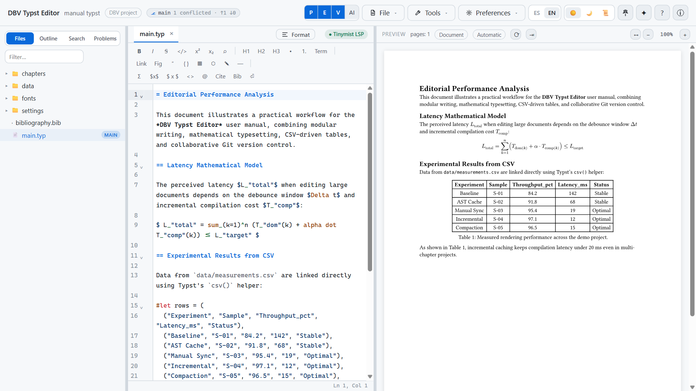
Typst is a modern typesetting compiler, much faster than LaTeX and without its arcane syntax — but it still required a terminal and any old text editor to use. DBV Typst Editor bundles the official Typst compiler inside the app itself (Rust + Tauri v2, no Electron) and adds what a real academic document needs: templates with a data form, citation and image assistants, and a preview that updates on its own as you type.
None of this locks you in: the project you create is an ordinary Typst directory, which compiles just as well from the terminal with the official CLI. If you ever stop using DBV Typst Editor, your document is still yours.
🎬 Video Demonstration
See how smooth writing and real-time typesetting is in DBV Typst Editor, and discover how its optional AI assistant helps you draft, style, and troubleshoot right inside your workspace.
Practical walkthrough in English: explore the interface, offline-first philosophy, live PDF preview, and seamless AI assistance for drafting and academic styling.
Live presentation in Spanish: see how interacting with the AI model generates content, fixes Typst syntax, and renders changes live in the PDF preview pane.
The PDF recompiles on its own after every writing pause, page by page, with zoom and fit-to-width.
Formatting, headings, tables, equations and math symbols without learning the syntax, unless you want to.
A dropdown with the real keys from your .bib file, plus a form to create new entries without leaving the editor.
Drop images (auto-inserted with figure captions), whole project directories, or .otf/.ttf typefaces into fonts/ so they travel anywhere with your document.
A heading panel with click-to-jump straight to that page in the preview.
Community templates and packages, with the license shown before installing anything.
Ctrl + F inside the editor, without leaving the document.
The whole project — chapters, images, bibliography and its own fonts — in a single file to share.
An optional escape hatch to the Typst CLI, for anyone who prefers working with commands.
A fonts/ folder travels with the project — it composes identically on any machine.
Light, refined Dark, Sepia, High contrast, Nord, Dracula, Catppuccin and more — 3 assignable quick buttons plus custom theme with WCAG contrast feedback.
Optional on-demand Vim modal editing, live bottom status bar (Ln/Col), relative line numbers, and popup-safe Escape handling.
Reads .vscode/*.code-snippets and keybindings.json directly, wraps selections with $TM_SELECTED_TEXT, and inserts on right-click.
Full interface in both languages, including the built-in help and the Typst-typeset PDF user manual.
It is optional: with none connected, the editor works exactly as it always has. With a local AI, nothing leaves your computer.
Local (Ollama, LM Studio, llama.cpp, any OpenAI-compatible server) or cloud with your API key (Anthropic, OpenAI, Gemini, OpenRouter). "Connect an AI" detects what is already on your computer.
Connect Claude Code, Codex, Gemini CLI, Copilot, or Antigravity from the tripartite AI modal, tune model and reasoning effort, and approve every edit with its diff.
The AI proposes changes, across several files if needed. DBV compiles them in memory and tells you whether they compile before showing them to you; you accept or reject each hunk and can always undo.
With a local AI nothing leaves your computer. In the cloud you are asked before the project is sent. Keys go to the system credential store, never to a file.
You see what is sent: the open file, the selection, problems, outline, files mentioned with @ and the preview page. You can remove any item.
Ctrl+Shift+I on a selection: improve, fix, translate, shorten, convert to a table or list. In Problems, "Explain and fix" solves an error with an already-checked proposal.
The official documentation for the exact compiler version ships with the app, with a search that also understands Spanish terms. The AI looks things up in it instead of inventing functions.
It searches real templates and packages in the catalog and reads how they are used; it never writes a name or version from memory. With the AI’s help, or without it, you can move a document you already have into IEEE, Springer or whatever format you choose.
With a model that accepts images, the AI looks at the rendered pages to judge the layout. If a typeface is missing it offers it (with its licence) and adds it to the project only if you confirm.
Claude Code, Cursor, Codex or Claude Desktop can use DBV’s exact compiler, see the pages and query Universe. Read-only, no network and confined to the project; installing a package always asks you first.
A Problems panel with every error in the project and a CSV/TSV data viewer with "Insert as table".
Click on any screenshot to view it in full size. A carefully crafted visual environment that makes writing technical and academic documents a breeze.
Write with native syntax highlighting and watch your document, equations, and CSV tables typeset page by page without pressing a single button.
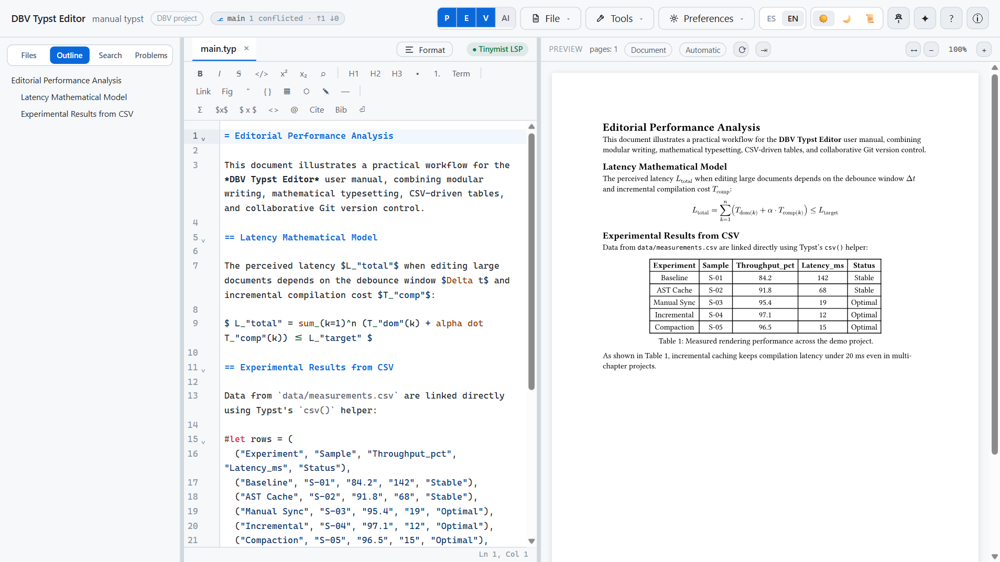
Jump directly to any section of the live preview using the sidebar outline panel, synchronized across modular chapters.
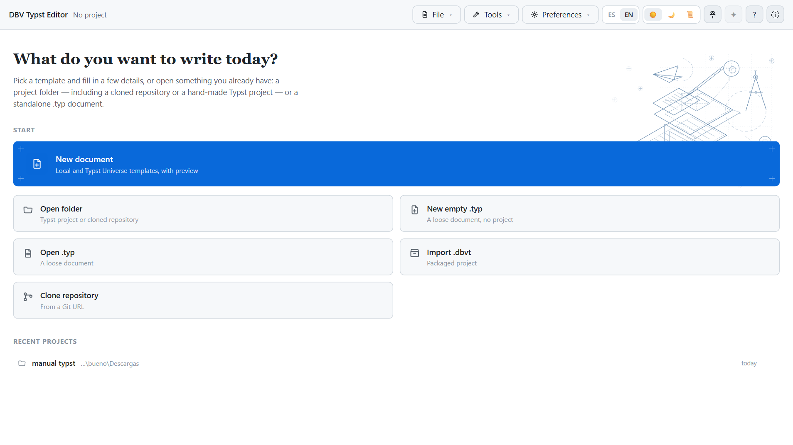
Start a bachelor thesis, master thesis, dissertation, paper, technical report, 16:9 presentation, CV, blank project, or clone a Git repo in one click.
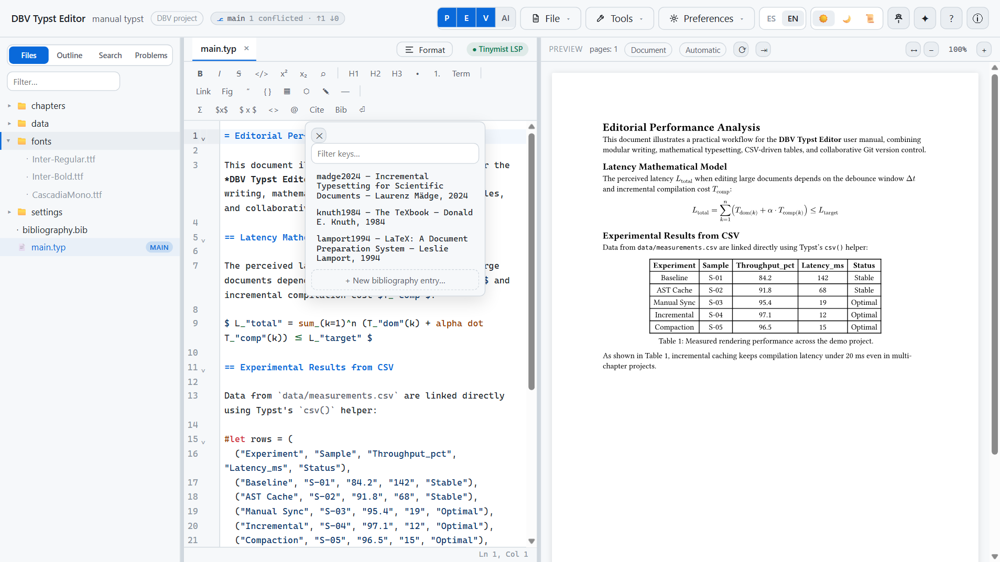
Filter keys from your .bib file in real time, and insert equations, math symbols (Σ), tables, and figures without memorizing syntax.
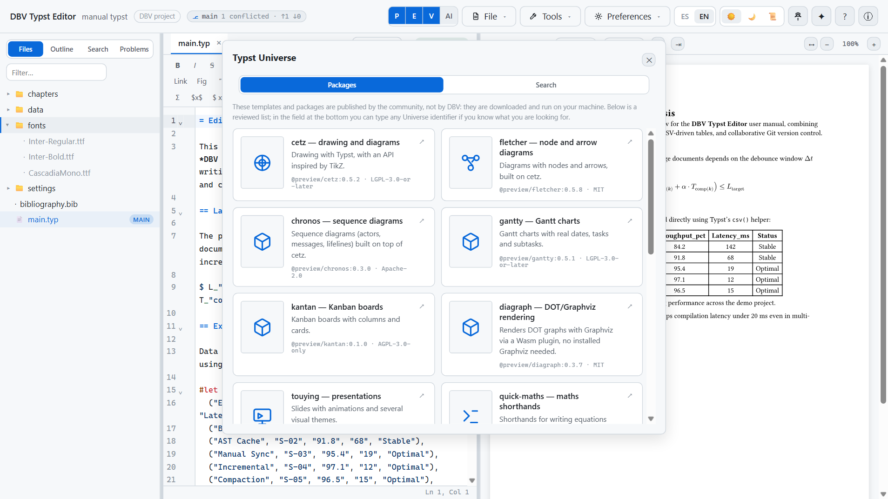
Explore and import community packages (cetz for charts, touying for slides, codly for code snippets) with clear open-source license visibility.
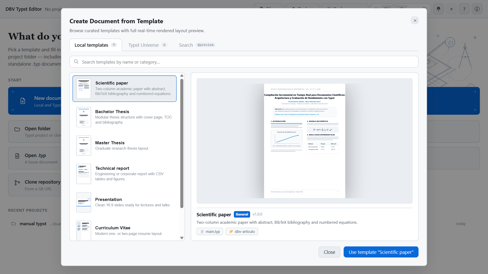
Bootstrap conference and journal papers formatted for IEEE, ACM acmart, and Springer with pre-configured layouts in a single click.
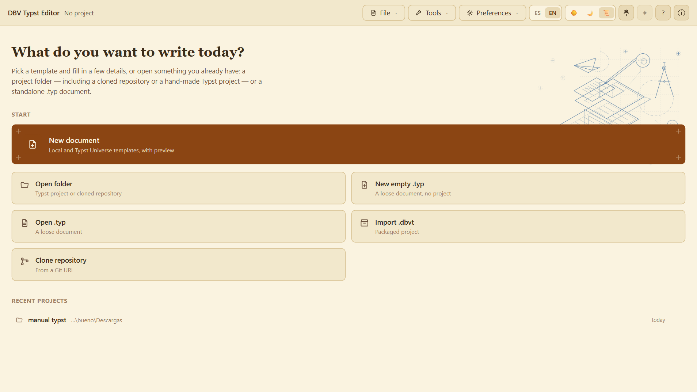
Rest your eyes during long writing sessions with our custom Sepia or Dark themes, and switch smoothly between English and Spanish.
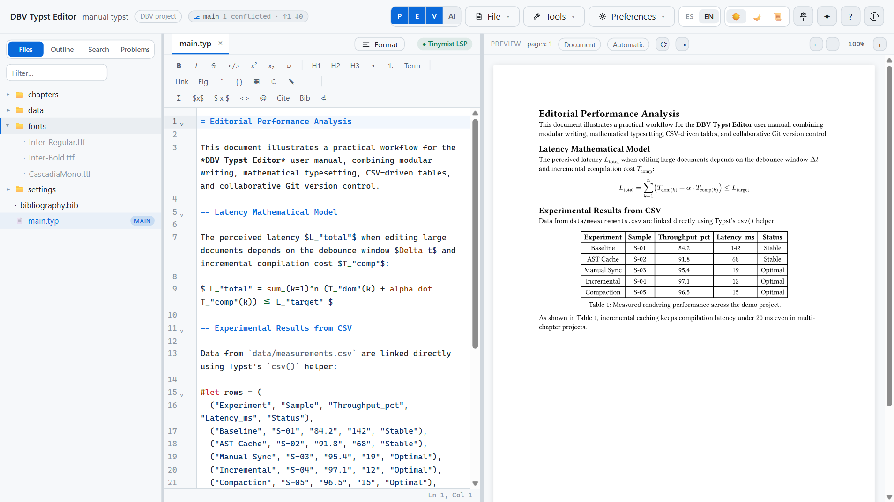
A dedicated fonts/ folder travels inside your project and .dbvt archive: your document renders with identical typography everywhere.
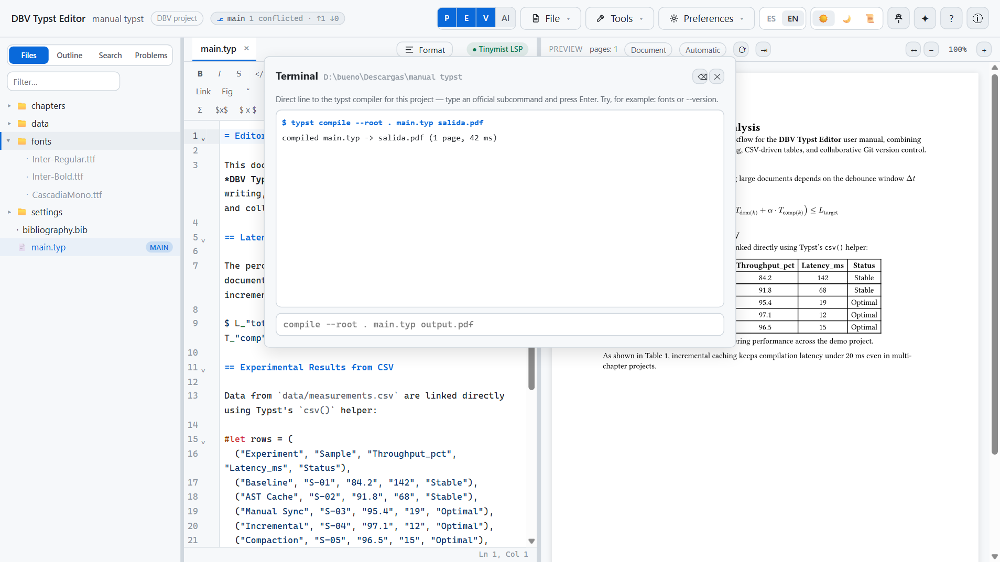
An optional escape hatch for advanced users wanting to run direct Typst subcommands and custom flags without leaving the application.
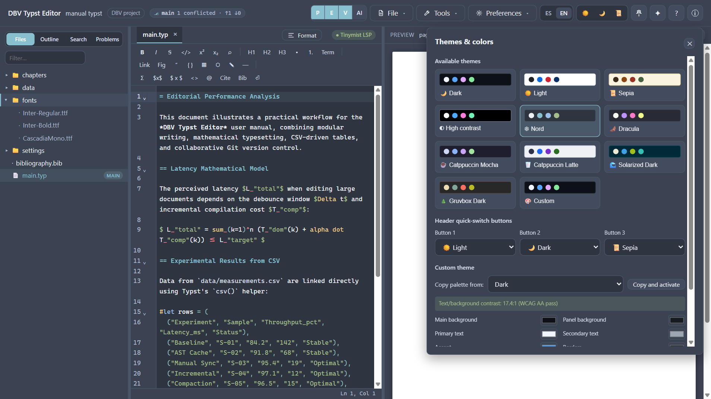
Pick from Light, Dark, Sepia, High contrast, Nord, Dracula, Catppuccin, Solarized, or Gruvbox, assign 3 header quick slots, and tune custom colors with WCAG AA checks.
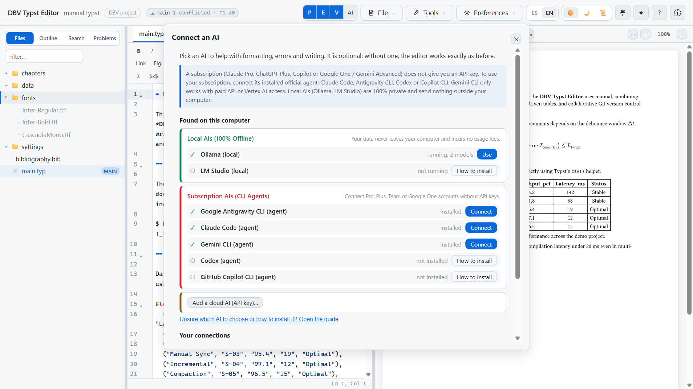
Run private models locally via Ollama/LM Studio, use subscription CLI agents (Claude Code, Gemini CLI, Codex, Copilot), or store cloud API keys safely in the OS keychain.
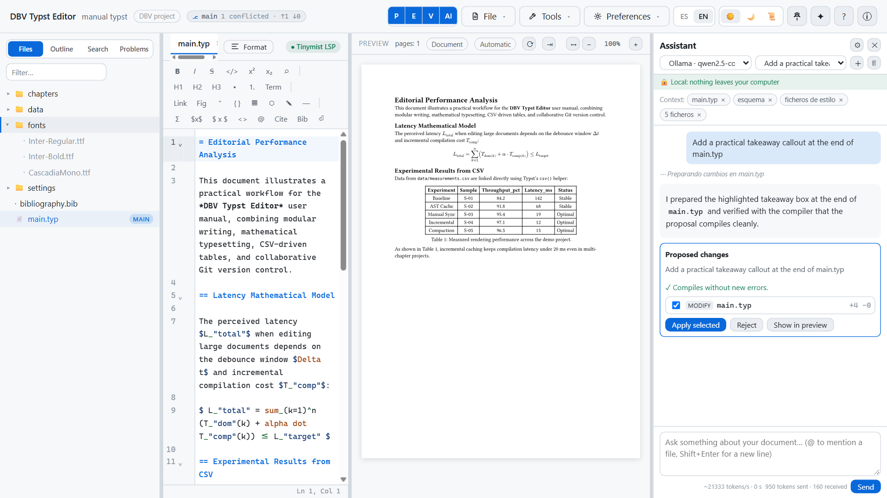
Every AI edit runs through the bundled Typst compiler before appearing as an interactive diff card you can preview, apply selectively, or reject.
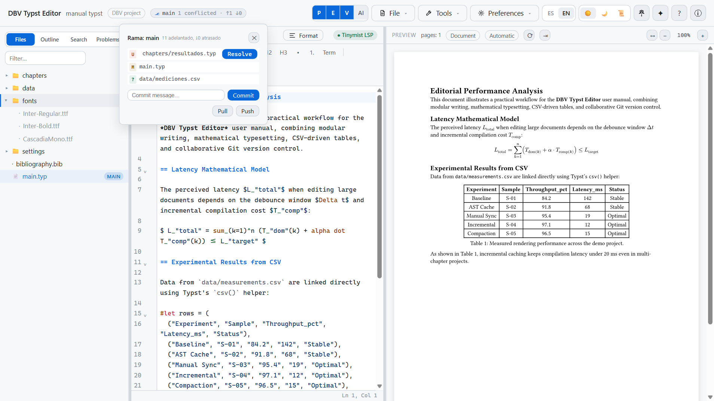
Track branch status, ahead/behind counts, modified/conflicted files, and push commits from the header pill—with pre-pull guards against accidental overwrites.
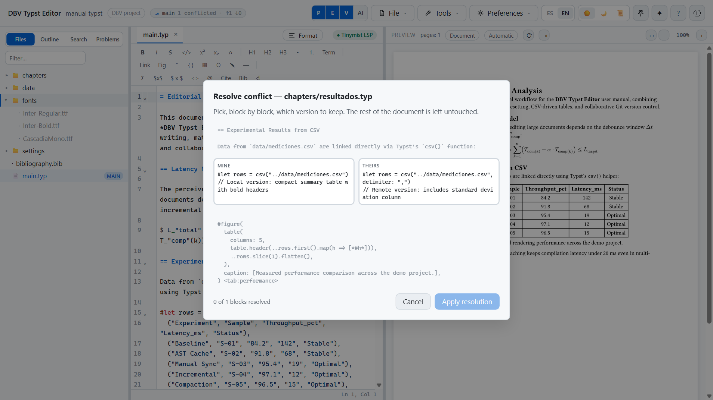
Resolve merge conflicts cleanly by picking Mine or Theirs per hunk while leaving surrounding Typst markup completely untouched.
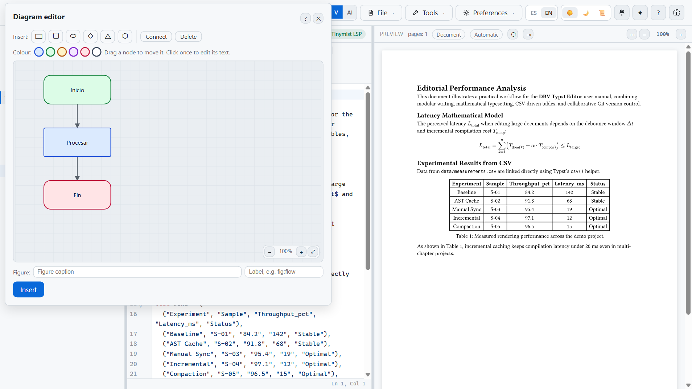
Build flowcharts, LaTeX-converted equations, sequence diagrams, Gantt charts, Kanban boards, and DOT graphs outputting clean editable Typst code.
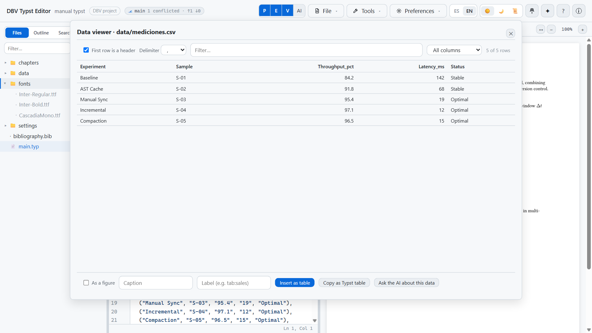
Sort and filter scientific datasets, bind tables live with csv(), or run Python scripts to regenerate plots and metrics without leaving the editor.
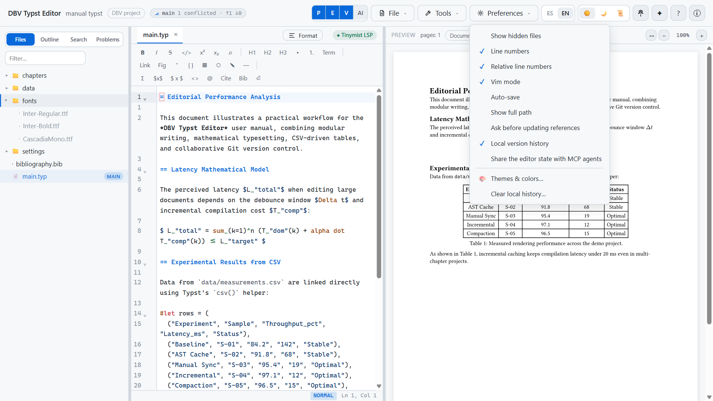
Enable modal Vim editing on demand, inspect cursor-relative line numbers, and toggle Manual Refresh for zero typing latency on huge manuscripts.
Each one is a self-contained Typst project: compiles offline, with the fonts it needs already included.
Get it from Microsoft Store for Windows or download ready-to-run packages for macOS (universal .dmg) and Linux (.AppImage, .deb) via GitHub Releases or Homebrew. No compiling or configuring dependencies.
The launcher asks what you want to write today. Fill in the form (title, author, institution...) and the project creates itself.
The PDF composes itself as you type. Save with Ctrl + S, export whenever you like.
Browse the full DBV Typst Editor reference in English or Spanish, or grab the .typ source files to compile and explore them right inside the app.
Full File, Tools & Preferences menu reference, Git collaboration & conflict resolver, visual assistants with Typst examples, Vim mode, 10 WCAG themes, AI, and MCP.
Guía completa en español con todos los menús, flujo colaborativo con Git, herramientas visuales con ejemplos Typst, Modo Vim, 10 temas WCAG, IA y MCP.
.typ)Built with DBV's own bundled Typst compiler. Inspect the editorial template and open it directly as a real project in the editor.
Free, open source, no strings attached. Available for Windows, macOS, and Linux.